Presentacion
Las plazas y parques Siempre han sido conocidas como lugares relacionados a la naturaleza la buena salud y los monumentos a nuestro pasado.
Hay muchas que son bien conocidas y con gran fama como Plaza de Mayo,
Bosques de Palermo O reservas naturales y parques nacionales que nos encogen ante la Inmensidad y belleza de la naturaleza,
pero en el mismo Buenos Aires hay lugares más pequeños y accesibles que también poseen historia y belleza apenas unas cuadras de nuestros hogares,
Y de los grandes negocios que todos hemos visitado.
A continuación podremos ver una recopilación breve de cinco lugares verdes que se han ganado su lugar su fama y su importancia
tanto en el barrio como en la ciudad, e incluso con tal historia que merecen su lugar en los libros.
Como podrán ver uno de los miembros posee una historia que se remonta al siglo XIV, cuando los europeos llegaron a las tierras de Buenos Aires,
mientras que el mas joven ni siquiera llegó a su mayoría de edad, algunos tienen una fama propia, mientras que otros han sido eclipsados por estar
al lado de lugares tan conocidos que les hacen sombra y no llegan a tener el debido reconocimiento más allá de los vecinos de la cercanías,
siendo pequeños tesoros escondidos en medio de la selva de cemento que es la mayor urbe de nuestro país.
Entre tanto pavimento siempre es un deleite en contra del césped verde, la sombra de un árbol dónde descansar,
y donde los niños puedan jugar sin pensar en el agitado tránsito, y alejando un poco el olor a humo,
y proveyendo aire puro que tan necesario es para tantas personas que vivimos aquí.
También nos recuerda un poco de la belleza que los europeos encontraron al llegar a nuestro pais,
al punto que algunos dijeron que no sabían si habían encontrado el perdido Edén o es que era un nuevo mundo que aún no había sido pisado por el hombre,
en donde los árboles Crecía ni daban fruto y en donde los ríos proveían de agua limpia.
Parques con sus monumentos qie no tenes que dejar de visitar
Pero estos lugares no son simples reservorios de materia vegetal o lugares salvajes que no han sido domesticados por el ser humano,
son de hecho lugares preparados para deleite y no solo al observar la belleza de la naturaleza,
sino que sus creadores decidieron agregar sus adornos con importancia histórica, estética o funcional, en algunos de estos lugares podrás encontrar desde:
gimnasios a cielo abierto, escuelas primarias, hasta incluso centros terciarios, teatros y otros lugares donde se fomenta la cultura además de hermosos
monumentos que nos ayudan a recordar un pasado en el cual aún no existíamos o éramos demasiado pequeños como para entender lo que estaba ocurriendo,
por eso estos lugares no son solamente para visitarlos, para descansar sino también para recordar aquellas historias que marcaron a nuestro país
y permitieron a familias enteras sobrevivir, Algunas historias de gigantes que cambiaron el rumbo de la historia
pero también otras historias más comunes, de lugares donde la gente iba a trabajar, a comprar y a vender buscando simplemente conseguir lo necesario
para alimentar a su familia ese día, pequeñas luchas que han permitido a toda la humanidad persistir hasta este día.
Parque Centenario
A pesar de ser creado por una orden de 1909 dentro de la mayor urbe de nuestro país, este parque no solo nació y se establecio como un punto de referencia,
sinó que incluso ganó fama entre locales y visitantes teniendo un interes turistico;
siendo el albergue de cien años de historia para nada solitaria de familias completas que nacieron, jugaron y crecieron en sus caminos,
por tres generaciones, así como el fruto de aquellas, cuyos pies tambien recorrieron los mismos caminos.
Monumentos y Arquitectura
Dentro de los terrenos del Parque se localizan Contrucciones de gran importancia, como el Hospital de Oncologia Marie Curie
El Anfiteatro Eva Perón, el Museo de Ciencias Bernardino Rivadavia, el Instituto de Zoonosis Louis Pasteur,
y una gran cantidad de asociaciones civiles, educativas y de apoyo asientan su sede en tan emblematico lugar.
Fauna y Flora
Cuando se diseño este lugar se incluyeron variedad de especies de arboles y arbustos ademas de conocido cesped,
en su lago se encuentran peces ornamentales así como patos y tortugas, ademas de una curiosa variedad de insectos
que lograron sobrevivir al agitado transito para llegar a sus aguas
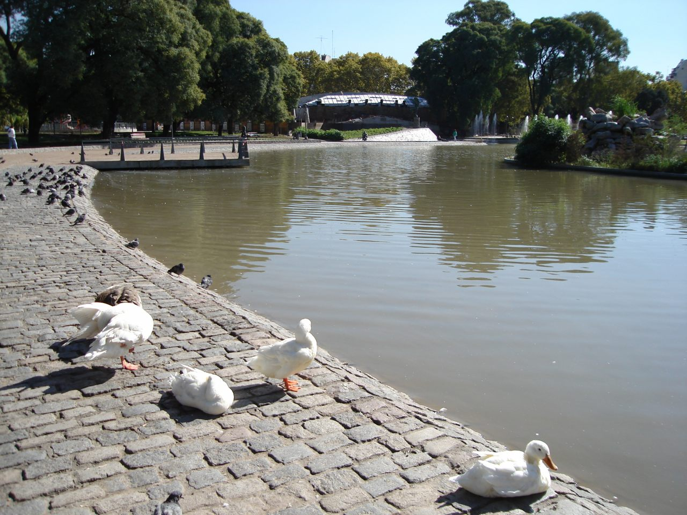
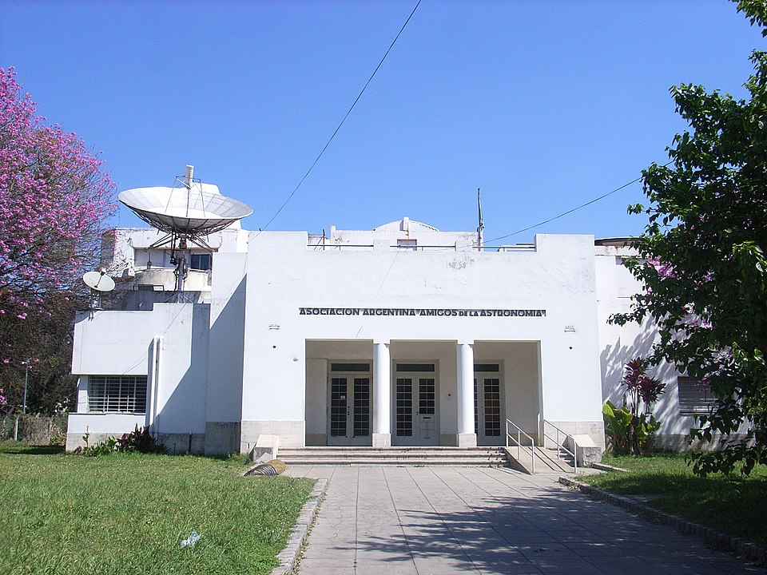
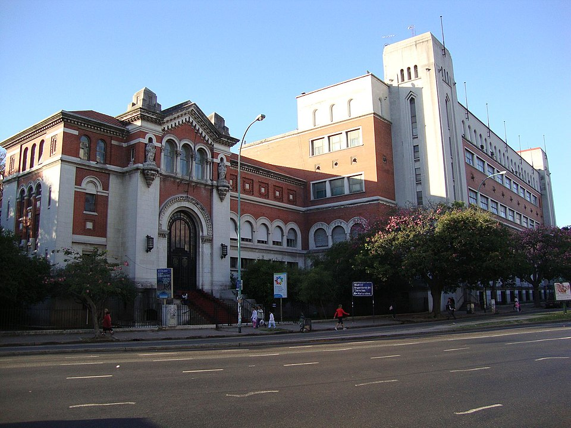
Parque Lezama
El Parque Lezama es un tradicional paseo en la Ciudad de Buenos Aires.
Se caracteriza por sus avenidas arboladas, su anfiteatro y la barranca que cae hacia las avenidas Martín García
y Paseo Colón. En su terreno se encuentra el Museo Histórico Nacional, volvientolo un lugar obligado para
quien guste disfrutar de la belleza de la naturaleza o del conocimiento.
Monumentos y Arquitectura
En la esquina de las calles Defensa y Brasil está situado un imponente Monumento a Pedro de Mendoza,
ya que se supone que es ese el lugar aproximado en el cual se produjo la primera fundación de Buenos Aires.
Fue inaugurado el 23 de junio de 1937 y es obra del escultor Juan Carlos Oliva Navarro,
quien retrató a Pedro de Mendoza en bronce, parado delante de una gran placa de mármol adonde fue tallada
la figura de un indígena. En las esquinas opuestas se encuentran los tradicionales bares y antes
almacenes Bar Británico y El Hipopótamo.
Sobre la calle Brasil, justo en frente de la terminación de la calle Balcarce, se encuentra el anfiteatro
con gradas de piedra en donde se realizan espectáculos al aire libre. La superficie rectangular que oficia
de escenario fue una fuente, que se ha rellenado y de la que son visibles los antiguos bordes de granito,
y en cuyo centro se encontraba la estatua de la "Diana Fugitiva o Siringa", que se encuentra
en el templete de influencia grecorromana (ver su descripción más abajo). Bajando la pendiente hacia
la Avenida Paseo Colón, se llega a un mirador con dos escaleras rústicas que rodean una gran fuente
con estatuas de bronce de Neptuno y las Náyades, comprada a la casa francesa Du Val D'Osne.
Dominando la barranca y junto al Museo Histórico Nacional, hay una terraza con bancos y rejas de hierro
que perteneció a la antigua Quinta Lezama y donde se emplazó hace pocos años una estatua de
la Madre Teresa de Calcuta. Bajo esta terraza están los depósitos de mantenimiento de parques
y jardines donde trabajan los empleados de mantenimiento del parque.
Sobre la calle Defensa llegando a Martín García, junto al sector de juegos infantiles, funciona una calesita construida en el año 1960,
que forma parte de las 53 calesitas existentes en la Ciudad de Buenos Aires. A pocos metros,
un par de canchas de bochas utilizadas por una sociedad civil del barrio.
Sobre la avenida Martín García, cerca de su intersección con la calle Irala, se encuentra el Monumento
a la cordialidad argentino - uruguaya, un obsequio de la República de Uruguay, a la ciudad de Buenos Aires
con motivo de celebrarse los cuatrocientos años de su primera fundación por Pedro de Mendoza.
El mismo fue realizado por los artistas uruguayos Antonio Pena y Julio Vilamajo. Bajando hacia Paseo Colón,
se encuentra un Cruceiro de cinco metros de altura, donado por el Centro Gallego a la ciudad en 1980,
en el 500 aniversario de su fundación definitiva.
En su interior, el parque conserva parte de lo que fuera el jardín privado de Lezama, del cual se mantiene
su forestación original y se destaca un antiguo sendero custodiado a ambos lados por hileras de jarrones
ornamentales de mármol, en un marcado estado de deterioro actualmente.
Por último, en el centro del parque y sobre la barranca se encuentra un templete de influencia grecorromana,
en cuyo subsuelo, hoy rellenado, están sepultadas las instalaciones de los antiguos baños del parque.
Actualmente alberga una estatua de la "Diana Fugitiva o Siringa", que se encontraba en mitad de lo que fuera
la fuente del anfiteatro sobre la calle Brasil, hoy rellenada y usada como escenario de dicho anfiteatro,
y cuyo acceso está custodiado por figuras evocativas de "El Invierno", "La Vid", "La Primavera" y "Palas Atenea".
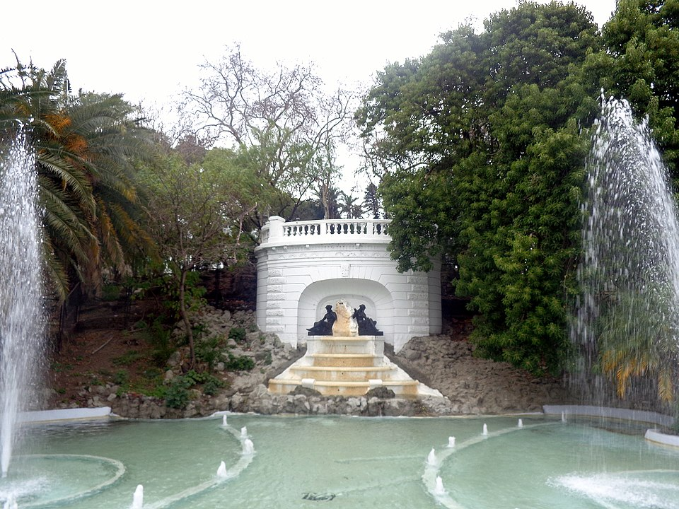
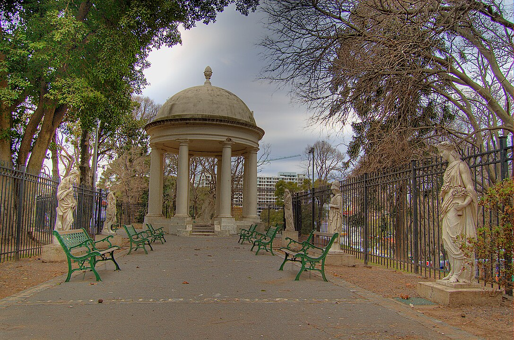
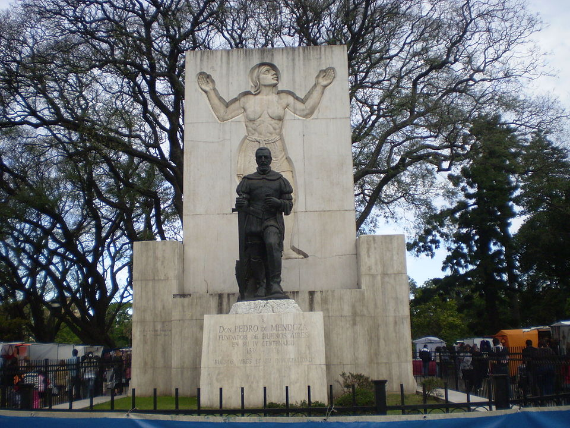
Parque Chacabuco
El Parque Chacabuco esta situado en el homonimo barrio, es un lugar que sobresale por su ambiente deportivo,
aqui podremos encontrar muchas estructuras destinadas al entrenamiento fisico, ademas de varias fuentes
de agua, un rosedal y muchos caminos para pasear.
Monumentos y Arquitectura
El Parque Chacabuco es tan grande que en si mismo es un Monumento, pero en su interior alberga obras de la
Arquitectura que merecen ser mencionadas por aparte: Muchas de ellas deportivas como la pista de atletismo
un parque polideportivo, Patios de Juegos, natatorios, etc; pero ademas contiene a numerosas escuelas
primarias, secundarias e incluso terciarias, y al lado de tales obras esta la Iglesia de Nuestra Señora de
la Medalla Milagrosa.
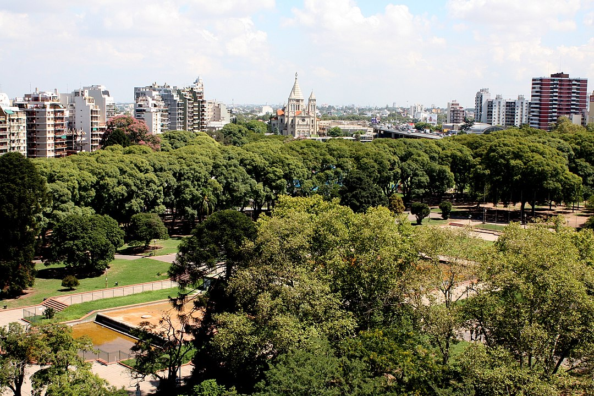
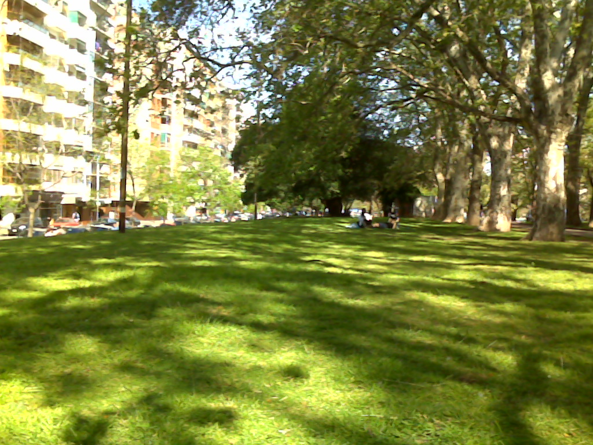
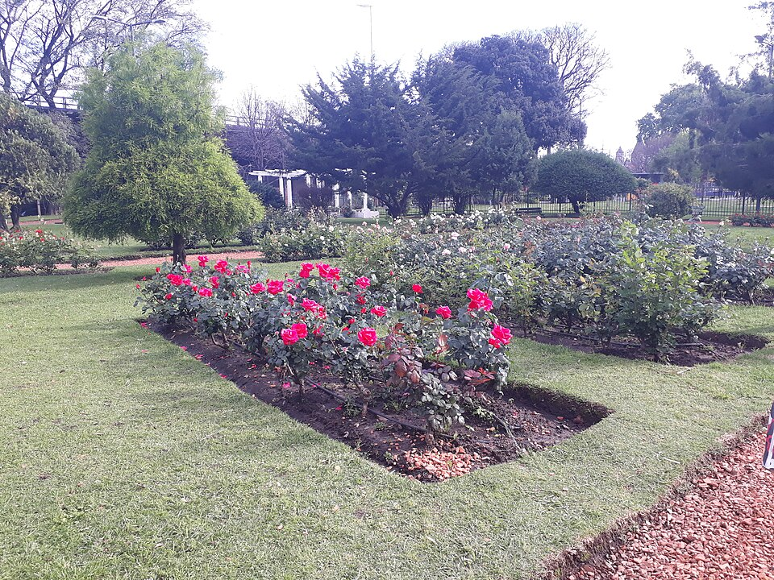
Parque Benito Quinquela
Ubicado cerca de la archireconocida Bombonera, este parque no se queda atras en los tesoros
que guarda, siendo el miembro mas joven de esta seleccion sobresale por no tener grandes nombres
extranjeros que lo diseñen, tan local que hasta las plantas son comunes y naturales del lugar
permite observar una gran variedad de flora nativa que fue señalizada, no solo es un parque
tambien es un aula a cielo abierto, y con numerosas piezas originales de la historia local
es un lugar que tiene naturalmente e historicamente un puesto importante en su barrio.
Monumentos y Arquitectura
Este predio pertenecía al ONABE, y se utilizaba para albergar una terminal multimodal con depósito de contenedores.
Los vecinos, que lucharon para convertirlo en un parque público, participaron en las Jornadas de Diseño Participativo,
acordando propuestas para un proyecto de diseño y para su Plan Maestro, y festejaron la publicación de la ley 1464/04
que ratificó el permiso de uso a favor del Gobierno de la Ciudad, y que transformó ese predio en urbanización parque.
La propuesta consiste en un parque lineal, a lo largo del cual se constituye un recorrido central que conecta sus extremos.
Allí se encuentra un gran patio de juegos infantiles organizado en tres espacios según grupos etáreos (uno de preescolares y
otros dos de escolares); un estanque con plantas acuáticas; y una fuente con chorros de agua aleatorios que además de
entretener con sus movimientos de agua sirven para refrescar en el verano a los visitantes que tomen sol en el solarium lindante.
Se construyeron pérgolas con especies trepadoras (hasta que las mismas crezcan las pérgolas están cubiertas con cañas) que ofrecerán sombra
mientras se desarrollan los árboles; un playón multiuso (que ha sido el reciclaje del piso de hormigón armado de un galpón que existía en el lugar);
canchas de bochas y de tejo con mesitas con tableros de ajedrez; y un edifico reciclado que actúa como centro de interpretación del parque
(que posee baños públicos para hombres, mujeres, niñas, niños y discapacitados). En un extremo del parque se divisa una pequeña cancha de fútbol.
Toda la vegetación implantada está señalizada con carteles que identifican cada especie por su nombre científico y vulgar.
En el lugar habían quedado algunos rastros de su uso ferroviario de cargas. Como un antiguo cartel, que fue restaurado,
que indica la presencia de la “Estación Casa Amarilla” del FNGR (iniciales de la antigua línea Ferrocarril Nacional General Roca).
También se encontró una roca granítica, de cuando las traían en trenes cargueros para uso constructivo, que tiene señales de haber sido trabajada de manera inconclusa.
Los vecinos propusieron colocarla como una pieza decorativa que además deja testimonio de las antiguas actividades del predio.
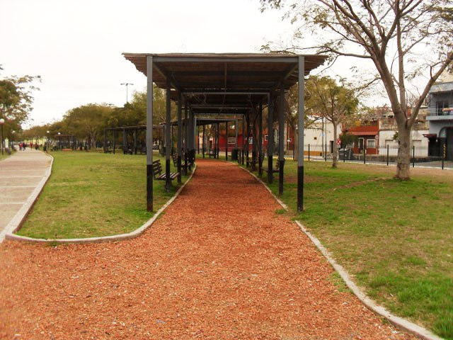
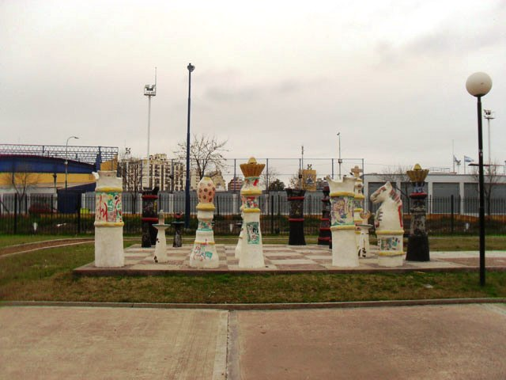
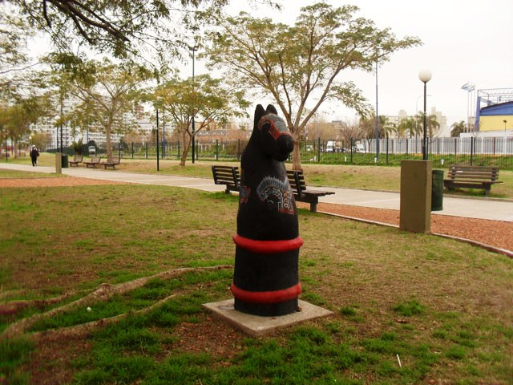
Plaza San Martin
Cambiando de dimensiones, esta plaza es pequeña en comparacion a los anteriores grandes espacios verdes, pero con una historia
tan extensa que no lleva hasta el 1537, siendo en principio el lugar de retiro de un criminal profugo, siendo despues un punto de
orientacion marcado por una enorme cruz, hasta que las tierras llegaron a manos privadas del gobernador del
Rio de la Plata Agustin de Robles en 1692, fue privado hasta 1860 cuando se inicio el proyecto de una plaza publica en ese lugar
pero tuvo que esperar hasta 1878 para ser bautizada con el nombre que la conocemos.
Monumentos y Arquitectura
Posee varias y majestuosas:
Monumento al General San Martín y a los Ejércitos de la Independencia: Monumento ecuestre en bronce sobre una base de granito pulido
que hace honor al General José de San Martín y a cuatro importantes hitos relacionados con la independencia americana:
el Cruce de los Andes, la Proclamación de la Independencia del Perú, la Batalla de Salta y la Toma de Montevideo.
El conjunto formado por el Libertador sobre el caballo fue el primer monumento ecuestre de la Argentina (1862), obra del escultor francés
Louis Joseph Daumas. En cambio los grupos de bronce alrededor del basamento son obra del escultor alemán Gustav Eberlein, y se inauguraron en 1910.
El Monumento a los caídos en Malvinas: es un cenotafio localizado en la dentro de la plaza, erigido en honor a los caídos en la Guerra de las
Malvinas. Situado en el sector de la plaza que da hacia la Avenida del Libertador, está formado por 25 placas de mármol negro con los nombres de los
649 combatientes caídos en la guerra acontecida en 1982, realizado por el letrista Eduardo Omar Urich.
La duda: Se encuentra a unos diez metros de la vereda de la Avenida Santa Fe, donde ésta se interseca con la calle Maipú.
Realizada en mármol de Carrara por el artista francés Cordier muestra a un joven creyente que se encuentra junto a su Biblia abierta,
mientras un anciano a su lado parece cuestionarlo.
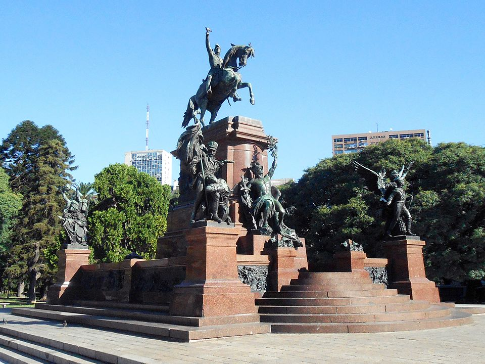
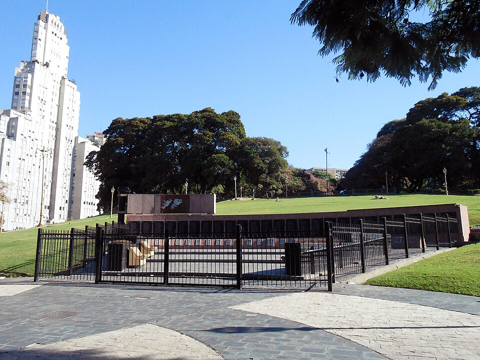
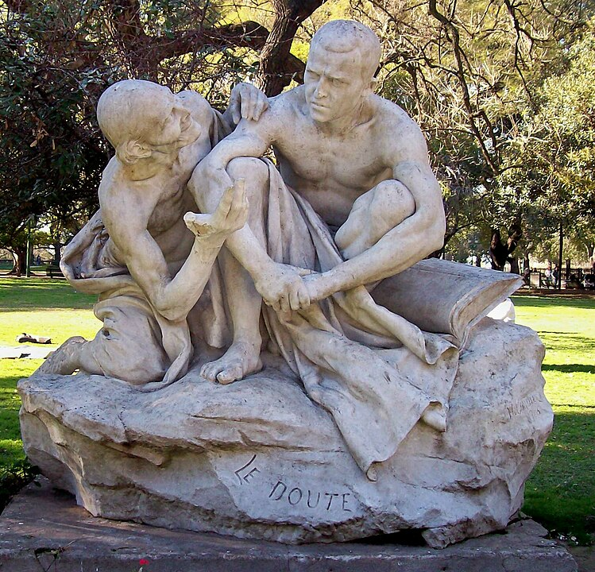